A song editor for "Frets On Fire"
Smash Drums (https://www.smashdrums.com/) is a VR drumming game available on Meta Quest (2, 3, 3S, Pro) and Playstation VR2. To simplify the typical drum format for a VR experience, it allows for bass drum, snare drum, hi hat, generic tom and generic cymbal. Ghost and accent note types can be defined, as well as a "clapfire" note type where the player hits the drum sticks together.
It's recommended to read through the main tutorial in EOF's Help menu to get a quick idea of EOF's basic use, and to skim through the manual if you're curious about what any of the menu functions do. The Help>Keys function also lists various keyboard controls that you may find helpful. Since EOF has been around for so long, there are also many written and video guides/tutorials on the Internet for how to use it. I'll try to gloss over the process in this guide. My recommendation for the base settings is to use Rex Mundi input method (File>Preferences>Preferences, bottom left corner of the options) which allow you to position the mouse with one hand, and toggle gems (individual playable hits of a note or chord such as a snare or a tom) on/off at that timestamp by pressing number keys 1 through 6 with the other hand. Also in the preferences, you can enable the "Inverted notes" option to have lane 1 (ie. bass drum) be at the bottom of the piano roll instead of at the top, so that it is in the bottom of the piano roll as would be typical for drum standard music notation. Also, you can optionally set the "Rock Band" color set if you like, as this can be helpful if you're familiar with Rock Band's note colors (ie. red is snare) and will also make more sense for the cymbal marking functions which are named after Rock Band's color style (ie. yellow cymbal is hi hat). I habitually use the lowest built-in EOF window size (File>Display>Display) of 640x480, but I also enable a Notes panel (File>Display>Notes Panel) to increase the width by another 50% so I can see more of the chart at a time. You can use a higher resolution or define your own window size, but if EOF's performance suffers and starts lagging, you may get better results by enabling a small resolution and using the "File>Display>x2 zoom" option, which is a less computer-intensive way to get a larger view. You can also use different monitor resolution sizes, scaling options or magnification options in your Operating System if you prefer, but that takes more effort in my experience.
If you are going to import drum content, please refer to these guides:
For importing Rock Band 3, Phase Shift, Clone Hero or YARG format content: [CHART IMPORT GUIDE]
For importing Guitar Pro format content: [GUITAR PRO IMPORT GUIDE]
First, determine whether you are going to import an existing rhythm chart. If so, you can skip straight to the [CHART IMPORT GUIDE] as rhythm game chart formats will already be synchronized to music, but it doesn't hurt to know how to evaluate and fix problems with the imported chart by following the steps described below. If you plan to import drum notes from a Guitar Pro file, EOF supports importing Guitar Pro timing created by the application Go PlayAlong (https://goplayalong.com/). Before Guitar Pro provided a way for users to synchronize guitar tab to music, Go PlayAlong was available and was a reasonably popular option for people who preferred its synchronizing workflow over EOF's. It has features to simplify/automate synchronizing the tablature and while it isn't very expensive, it does have a cost. There is a trial version available so you can compare its workflow against EOF's. The trial probably will not have a way to save the timing in a way you could import into EOF, but if you have the paid version and have exported the timing for the Guitar Pro tablature you would like to import into EOF, read the [GUITAR PRO IMPORT GUIDE]. Otherwise, if you are creating a project from scratch or plan to import from a Guitar Pro file after synchronizing the beats manually, continue reading.
EOF has a piano roll style of editing rhythm game charts that isn't very different from a traditional MIDI editor. To create a chart from scratch, you need to have audio for the song you want to chart in OGG, WAV or MP3 format. Or if you like, you can add the ability for EOF to import other audio formats by downloading FFMPEG (https://www.ffmpeg.org/download.html), extracting it to a folder on your computer and using EOF's "File>Link to>FFMPEG" function to browse to ffmpeg.exe to allow EOF to use it. EOF will convert the given audio file into OGG format to use that internally as well as when exporting the audio for Smash Drums later. To create a new project, I suggest creating a new folder (designated as the "project folder") on your computer to keep the files separate from everything else. Then put your audio file in the project folder. In EOF, use File>New and browse for that audio file. Then specify the artist name and song title and click OK.
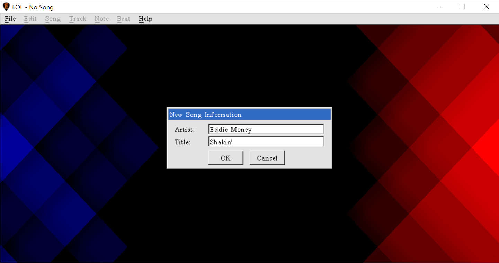
Pick the option to use the source audio's folder for the location of the new song. This will direct EOF to put the project file (notes.eof) in the project folder with the audio instead of creating a different folder. Now you will have a default chart with a tempo of 120 BPM, which by tradition of the MIDI standard is the default tempo of any song until it specifies otherwise. Each of the --> arrows above the piano roll represent a "beat marker", and as per the math of 120 BPM, they are 500ms (one half second) apart. Press F5 to show a waveform graph of the song. The spikes in the graph that you see in many modern songs are typically the drummer and you will want to synchronize the beat markers --> with the drums to get a chart that feels like it is well synchronized.
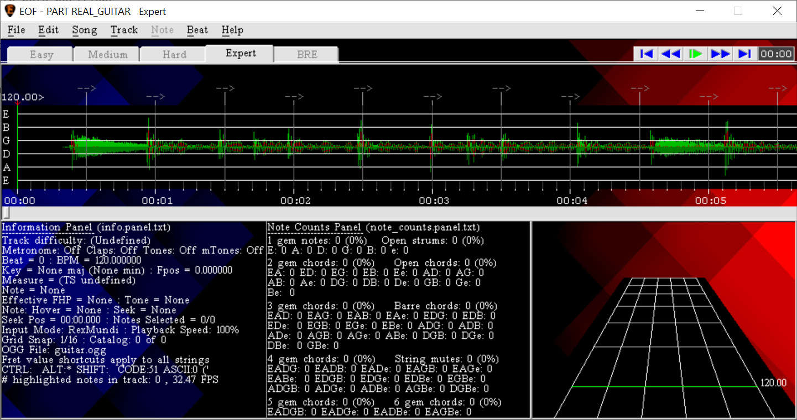
A typical strategy to begin with is to click and drag the first beat marker to line up with the first spike in the graph.
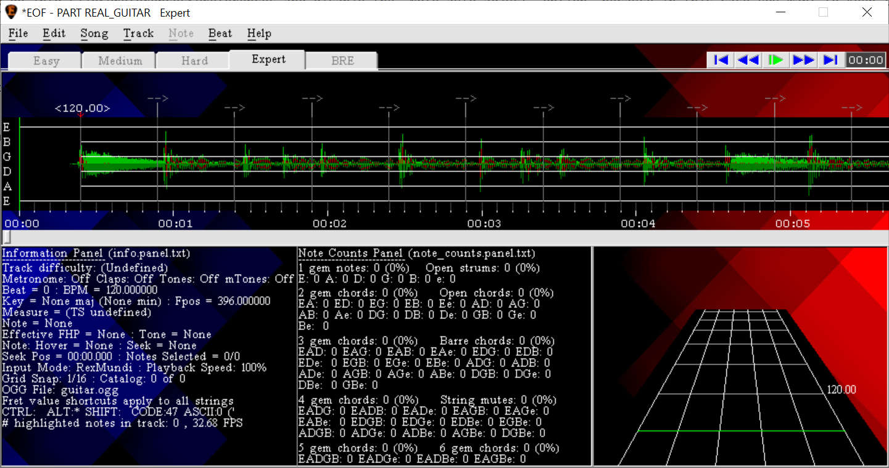
You can use a touchpad if you're working on a laptop, but a mouse is recommended. However if your mouse/touchpad isn't cooperating well enough to make very finely tuned adjustments here, you can open Song>Properties and manually edit the timestamp of the first beat marker in the Delay field at the bottom left. This timing is in milliseconds, and this delay has a special meaning in many rhythm games which use MIDI formatted charts in that it is an offset between the audio and the chart content itself.
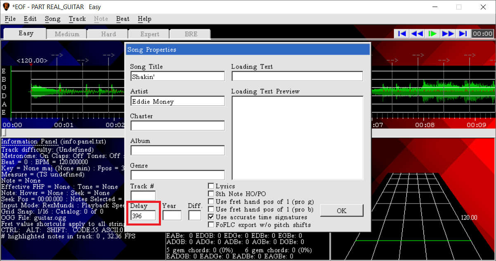
After the first beat marker is positioned, the best thing to do next is to set a good tempo on the first beat marker to match the general tempo of the song. This will make the rest of the beats closer to the drummer and as a result, synchronizing the rest of the song will take less work. You can look up the tempo online or use any tool you prefer. EOF even has a built-in tool for this with "Beat>BPM>Estimate BPM", which uses the MiniBPM utility from breakfastquay (https://breakfastquay.com/minibpm/) to analyze the audio, guess the tempo and offer to set that tempo on the first beat. In the case of this example, it suggested a tempo of 113.31BPM. Your mileage may vary, but unless the song is electronically produced to have a perfectly steady beat, you're probably going to find that you need to adjust the tempo manually:
There are different approaches you can take to get a good starting tempo, but my preferred method is as follows:
Select a beat marker a few beats in and move it to the peak in the waveform graph it should line up with:
This turns the beat into an "anchor", which is a beat marker whose position is now set and won't be influenced by clicking and dragging beat markers that come before it (the only exception to this is the first beat marker which can always be moved because it is an offset for the whole project). Visually, an anchor will always have a downward red arrow pointing at the piano roll instead of just a vertical line, even if it doesn't reflect a change in tempo. You can see that the first beat marker's tempo was adjusted to make the beats short enough so that the anchor lines up with the position to which you dragged it. Defining the position of beat markers to line up with music this way is traditionally known as "beat syncing". The positions of the beat markers collectively is referred to as the "tempo map". Since the goal is to make the first beat marker's tempo more accurate, you can delete the anchor of the beat you just moved with the "Beat>Delete anchor" function.
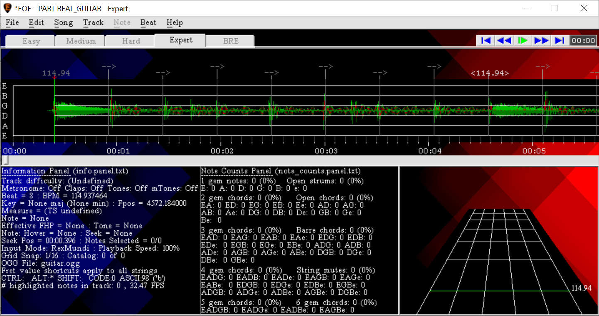
You can now see that the anchor has been removed (no red downward arrow) and like all the other beats, it now has the same tempo as the last tempo change that occurs before it (the first beat marker), and the first beat marker's tempo has been made slightly more accurate. Having seen how that process works, a shortcut way of doing this without having to repeatedly delete the anchor after moving the beat is to hold the CTRL button while you left click and drag a beat marker. As long as there are no anchors after the beat you're dragging, it will adjust the previous anchor's tempo to reflect the position of the beat you are directly moving with the mouse.
Then going a few seconds further in, repeat the process to synchronize a beat to a waveform graph spike that looks like it's close enough to be meant to be in sync with the song.
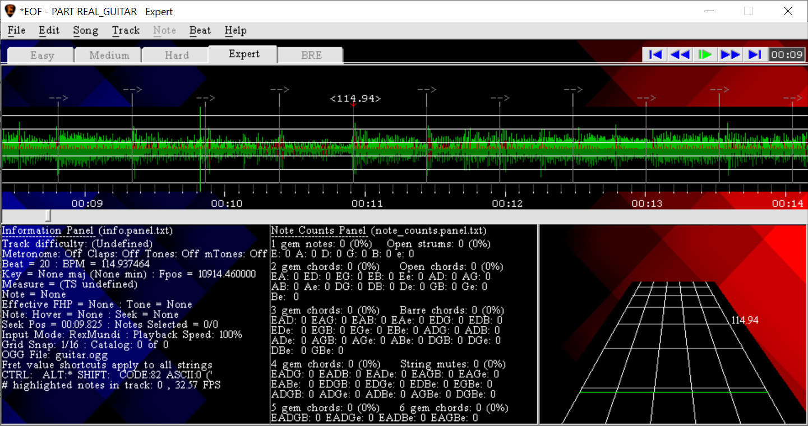
You can move throughout the song by clicking the seek bar below the piano roll, by holding the left/right arrow keys, by seeking a beat at a time by pressing or holding PgUp or PgDn, by seeking a screen at a time with CTRL+PgUp or CTRL+PgDn, by clicking on the playback controls in the top right corner of the EOF window, by holding ALT and using the scroll wheel (to seek 5%, by default, of one screen full of the chart), etc. By the time I used this process on the first 30 seconds of the song, the first beat marker had trended toward 114.26BPM and you can see that at least the first screen-full of beat lines are reasonably close to the spikes in the graph:
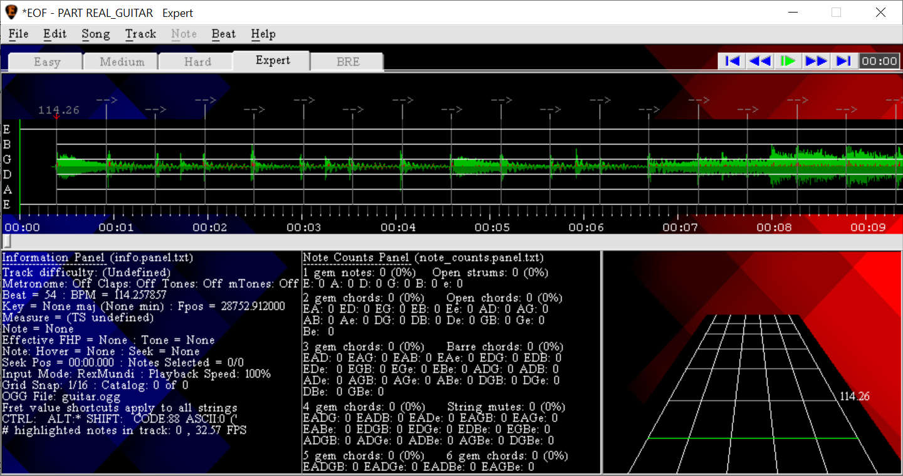
You can go further into the song if you want, but at a certain point it won't make the tempo much more accurate, and this is just meant to be a rough estimate of the tempo anyway. Take this opportunity to save the project (File>Save). EOF doesn't crash/hang often but it's good to save your work once in a while in case you accidentally break something with the chart. EOF makes many undo states (which can be manually opened with File>Load if EOF does crash), but only one re-do state so you still need to be careful. EOF will make a spare backup of the project ("...backup.eof.bak") every 10 edits to the chart (every ten actions that are undo-able), but this backup gets overwritten each time it's made. Every time you save, the previous save of the project is saved as (...previous_save.eof.bak") but it is also overwritten by the last save of the project each time you save the project so unless you make spare copies of your project every so often, you can only revert by one file save. The "Save" function will report on various issues and offer various suggestions to cancel the save and perform other steps, but if you don't want to deal with any such prompts you can always use "Quick Save" instead, which will save as-is with no prompts.
Now that the first beat has a good starting tempo, you will work your way toward the end of the song aligning the beat markers to be reasonably in-time with the drummer, but this time you will keep the beats anchored to make the synchronizations permanent. Clicking and dragging the beat marker is usually fine for minor sync corrections, although there are keyboard controls (see Help>Keys's description of the - and = shortcuts) which can be used to granularly manipulate the tempo of the nearest anchor at or before the seek position. If a beat marker is already well lined-up with the drummer, you can make it an anchor (to ensure it stays synced and can't be moved out of place when you sync the rest of the chart). You can make a beat an anchor without having to move it (which causes its tempo to change) by middle clicking (ie. click the scroll wheel) while hovering the mouse over the beat. Alternatively you can select it by left clicking on the beat and using "Beat>Anchor beat" (or press the A key). By design, any beat that has a tempo change is required to be an anchor and cannot have its anchor status removed.
Looking at the waveform isn't enough, especially when other instruments in the song are loud enough to make it harder to see the drum part in the waveform. Audibly test the sync of the beat map by enabling the metronome (Edit>Metronome, or press the M key) and playing back the chart in EOF (press Spacebar to play/pause or use the playback controls at the top right corner of the program). The metronome ticks should sound like they play exactly on top of the drum beat as much as possible, only limited by how much time you're willing to spend beat syncing. If the song is too loud compared to the metronome, you can use the volume sliders in "Song>Audio cues" to lower the chart volume and make sound cues like clap and metronome easier to hear. If this isn't enough to help, you can try going into "File>Settings" and enabling the phase cancellation option (this uses noise cancellation to remove audio that is panned over the center of the audio channels which is often how the vocal stem is mixed in songs), or you can try enabling the center isolation option (basically the opposite of phase cancellation in that audio that isn't panned over the center of the audio is muted). While listening to the metronome during playback, if a metronome tick for a beat sounds like it's coming too late compared to the drum beat in the song, move that beat a little earlier. If the tick sounds like it comes too early, move the beat a little later.
You can play the audio at less than full speed if desired. Hold CTRL while starting playback to play at 50% speed. Hold CTRL and SHIFT while starting playback to play at 25% speed. Press ; or ' during playback to adjust the playback speed in 10% increments. Hold CTRL while pressing ; or ' during playback to adjust the playback speed in 1% increments.
It's normal that you only need to make small adjustments at a time, even in tens of milliseconds, because the waveform graph is typically a very good representation of the song's beat. Continue syncing the chart. It's best to go from beginning to end as much as you can without going in reverse order, because an anchor later in the chart could make it more difficult to resync several beats that come before it. Once you have roughly synced the song from start to finish, you can definitely go back and re-sync individual beat markers as you see fit if they stand out as being out of sync. You don't have to go as far as synchronizing every single beat, but depending on how steady the drummer's playing is, that may be necessary for some parts of a song (especially around drum fills). It's a common recommendation to sync a beat once per measure to keep the chart relatively well-timed. You can zoom in and out with the + and - keys on the number pad. If you want to see a larger amount of the waveform graph at a time, you can even use "Edit>Zoom>Custom" to zoom out more than the number pad - shortcut can by default (1/10). Here's what 1/20 zoom level looks like for this chart:
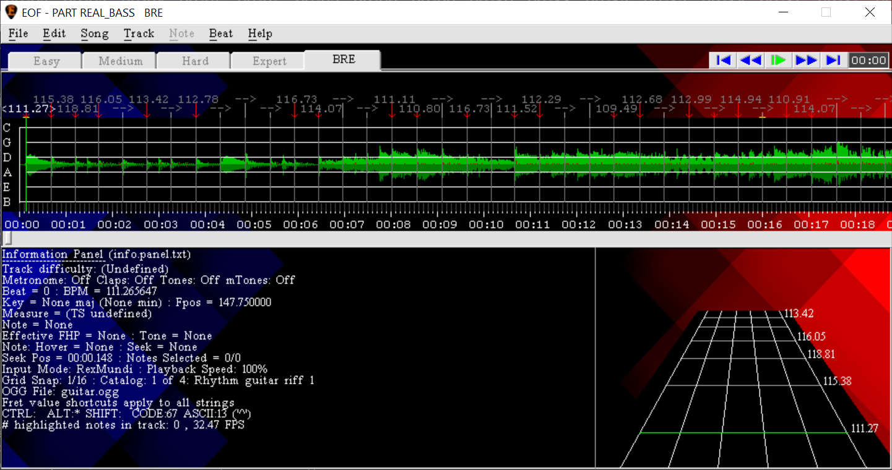
If you'd like to make the waveform graph smaller or larger on the Y scale, you can use the "Scale Y axis (%)" option in "Song>Waveform graph>Configure" to define a percentage from 10 to 999:
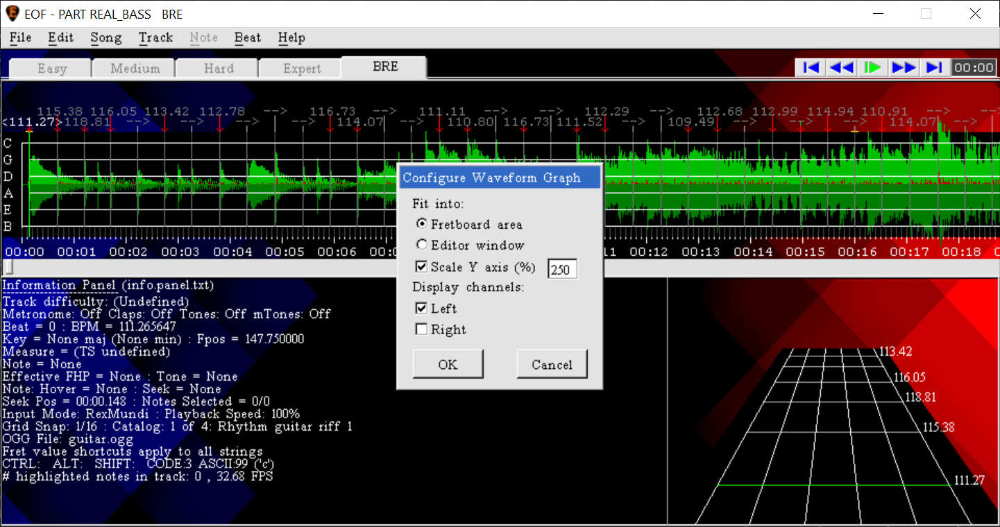
You can optionally also define time signature changes by selecting a beat and using the "Beat>Time signature>" menu functions, although this has no effect in Smash Drums and is just for your use, such as if you want drum notes to line up with measure numbering like with sheet music you may be referencing. EOF has lots of keyboard shortcuts (especially as summarized in Help>Keys), so having a full sized keyboard is helpful. Make sure to save your work when you're done with the beat syncing.
Most of EOF's available tracks are for non drum notes, but the ones that can define drum notes are:
PART DRUMS
PART REAL_DRUMS_PS
The main difference between these two is that the latter one has extra functionality available for a rhythm game called "Phase Shift" that won't be relevant for Smash Drums. You are free to use either or both of these tracks however you see fit. You can change the active track by using CTRL+Tab to change to the next track, SHIFT+CTRL+Tab to change to the previous track, or using Song>Track and clicking the desired track from the list. You can tell which track is active by the name displayed in EOF's title bar (ie. "PART DRUMS" for the normal drum track). Each track will allow you to define four difficulty levels of the drum chart: Easy, Medium, Hard and Expert (the last of which is displayed as "Extreme" in Smash Drums). You can tell which difficulty is active as its tab will appear taller than the others and the difficulty name will be drawn in black instead of gray. You can select one note at a time to edit it by itself (such as to move, delete or convert into a cymbal) or select several notes to edit them all at once. By default, when you place a new note or edit an existing one, it becomes the only selected note. You can select a single note by left clicking on it, add or remove additional notes to the selection by holding CTRL while you click or select several consecutive notes by having left clicked on one note to select it and then using SHIFT+click to select all notes in between. The best practice is to author the complete drum transcription in the expert difficulty level, then you can optionally create lower difficulties (known as down-charting) or allow the game to automatically down-chart for you. Click on any of the difficulty tabs to change to that difficulty. Any difficulty level that has content in it will display with an asterisk * next to the difficulty's name. Feel free to ignore the "BRE" difficulty tab, this is for a mechanism that is Rock Band related.
By default, notes are able to be placed in an unstructured free-form style, but for best results you should set an appropriate grid snap value using functions in the "Edit>Grid snap>" menu (or use the comma and period keys to make the current grid snap setting larger or smaller), which will force the mouse to snap between quantized beat intervals as it moves left and right in the piano roll (unless the mouse moves over an existing note, so you are able to select it). The default grid snap values are based on #/4 meter, so 1/4 would indicate whole beat intervals, 1/8 would be half beat intervals, etc). Or if you want to get really specific with timing you can set a custom grid snap value to set a specific subdivision of beats or measure. Using grid snap will allow you to easily define notes at their proper positions when the project is correctly beat synced, for a well-timed result.
To explain how marking cymbals works, Rock Band originally had multi-purpose yellow, blue and green drum pads that were used for both cymbal and tom notes. Starting with Rock Band 3, the game offered "pro drum" mode where there were also yellow, blue and green cymbal pads on the drum kit. The game did not allow a note to be both a tom and a cymbal at the same time, so yellow, blue and green notes default as toms in EOF and then can be modified to be cymbals instead.
Assuming you are using Rex Mundi input mode as described near the top of this tutorial, you would place/remove a bass drum note at the mouse position by pressing the 1 key on the keyboard (the normal key, not the numberpad key) to toggle a note on "lane 1". You would place/remove a snare drum note with the 2 key to toggle a note on "lane 2". You would place a tom note with the 3, 4 or 5 keys to toggle a note on lane 3, 4 or 5. Rock Band style charts allow for 3 different tom notes, but for the sake of Smash Drums they will all export as the same tom note so you can just use them separately to differentiate low, medium and high toms. You would place a hi hat note by placing a note with the 3 key (or selecting an existing note on lane 3) and using the "Note>Drum>Cymbal>Toggle yellow" function (CTRL+Y). You would place a non hi hat cymbal by placing a note with the 4 or 5 key (or selecting an existing note on lane 4 or 5) and using the "Note>Drum>Cymbal>Toggle blue" (CTRL+B) or "Note>Drum>Cymbal>Toggle green" (CTRL+G). You can also use "Note>Drum>Cymbal>Toggle cymbal" (CTRL+ALT+C) to switch all selected lane 3, 4 and 5 between tom and cymbal status. If there is a mix of tom and cymbal notes selected and you wanted to make them all tom notes, you would use the "Note>Drum>Cymbal>Remove cymbal" function. If there is a mix of tom and cymbal notes selected and you wanted to make them all cymbal notes, you would use the "Remove cymbal" function followed by the "Toggle cymbal" function. If you want to place several hi hat and cymbal notes at a time without having to manually toggle them into cymbals, you can use the "Note>Drum>Cymbal>Mark new notes as cymbals" function to make notes on lanes 3, 4 and 5 default as cymbals instead of defaulting as toms.
"Crystal" drum notes are analogous to ghost drum notes, where the note is required to be played very lightly. You can define specific lanes of a drum note to be crystal notes by selecting one or more notes and using the "Note>Drum>Ghost>" menu functions. When a note is marked as a ghost note, a red G will display below the note in the piano roll and the affected gems in that note will have a white background. "Burning" drum notes are analogous to accent drum notes, where the note is required to be played very strongly. You can define specific lanes of a drum note to be burning notes by selecting one or more notes and using the "Note>Drum>Accent>" menu functions. When a note is marked as an accent note, a red > will display below the note in the piano roll and the affected gems in that note will be drawn in black. "Clapfire" notes represent where the drummer hits both drum sticks together, perhaps during the count-in of a song or during a break in the song to keep the player occupied. To define clapfire notes in EOF, you have to enable an extra drum lane by using the "Track>Phase Shift>Enable five lane drums" function, then any note you place on lane 6 using the 6 number key will export as clapfire.
Place notes appropriately for the song using these controls. Once you have gotten to the point where the drum patterns repeat, you can use copy and paste functions as a time saver. You can use Edit>Copy (or press CTRL+C) to copy the selected notes to EOF's clipboard, seek to the position the notes should be pasted (you can use various seek commands to get accurate placement, especially Pg Up/Dn to seek a beat at a time or CTRL+SHIFT+Pg Up/Dn to seek a grid snap value at a time, depending on the currently set "Edit>Grid Snap" setting) and use Edit>Paste (or press CTRL+V) to paste the notes. If you expect a pattern of notes is going to be used several times, EOF has a "Fret Catalog" that allows you to store the start/stop time of repeating patterns so you can easily view them and paste them while authoring the chart. To add a fret catalog entry, select the notes that make up the pattern (ie. click and SHIFT+click to select several notes), then use Song>Catalog>Add to add this pattern to the Fret Catalog. To see the Catalog, use Song>Catalog>Show (or press the Q button to hide/show it). You can play back the active Fret Catalog entry by holding SHIFT and pressing spacebar. The Song>Catalog menu has some other related functions such as to give the pattern a name for your own reference, to have its display take up the full width of the bottom half of EOF or search for instances of the pattern in the active track difficulty. If you have reached a part of the arrangement you're authoring where the pattern is going to be repeated, you can seek to the position where the pattern repeats and use "Edit>Paste from>Catalog" to paste those notes starting at the seek position. Just make sure that if the pattern is slightly different in some parts, you adjust the pasted notes accordingly. Keep in mind that if you edit the specific notes that were used to create the catalog entry, the entry itself will reflect those changes.
Since the game can only allow two playable notes at a time, you will have to take some creative license with which notes to put in the chart and which ones to leave out. As the chart author, it's up to you how to do it. For example, in the intro to "Shakin'" by Eddie Money, I left out the hi hat notes (which might be played by a hi hat pedal) in favor of the more prominent bass, tom and crash cymbal notes:
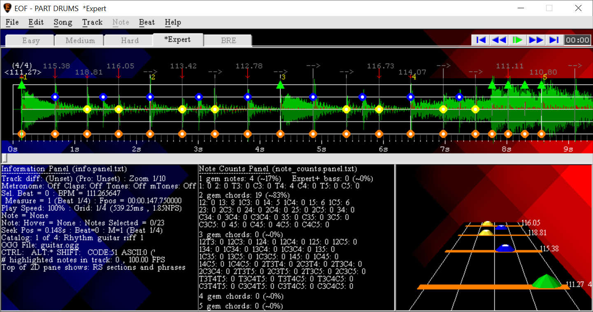
Play back the song with metronome (Edit>Metronome) and claps (Edit>Claps) to test the sync of the beats and notes as desired. Once the Expert difficulty of the drum track is authored, you can optionally create the next lower difficulty by clicking the Hard difficulty tab and using the "Edit>Paste from>Expert" function to duplicate the expert difficulty level. Then you can go through the Hard difficulty simplifying the chart a little bit to make it easier to play. Some good options to simplify would be to thin out parts that have really fast repeating notes by removing notes that are outside the normal beat of the song, such as with a metal song that has fast double bass (where the drummer is hitting a different bass drum pedal with each foot) which could be simplified to single foot bass by playing every other bass note. In case you would find it helpful to reference the higher difficulty while authoring a lower difficulty, you can use the "second piano roll" feature to display different track difficulties in the upper and lower halves of EOF. The second piano roll displayed in the lower half is view only and only the primary (top) piano roll is editable. The functions and related keyboard shortcuts for this feature are in the "Song>Second piano roll>" menu:
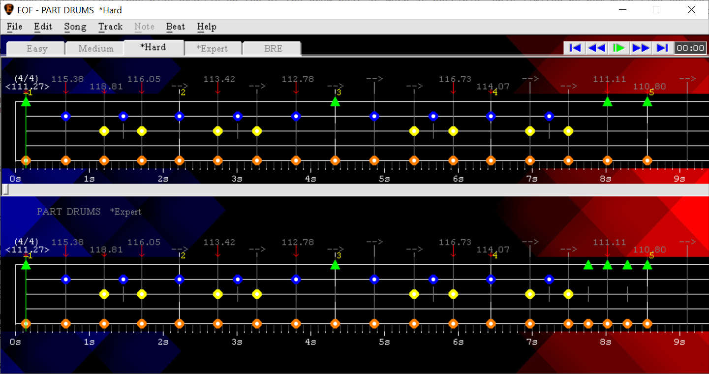
Then you can likewise optionally duplicate the Hard difficulty into the Medium difficulty and simplify it further, and optionally duplicate the Medium difficulty into the Easy difficulty and simplify it further. After the drum track is to your liking, or you would like to test your work in progress inside Smash Drums, proceed to export to Smash Drums format [SMASH DRUMS EXPORT GUIDE]